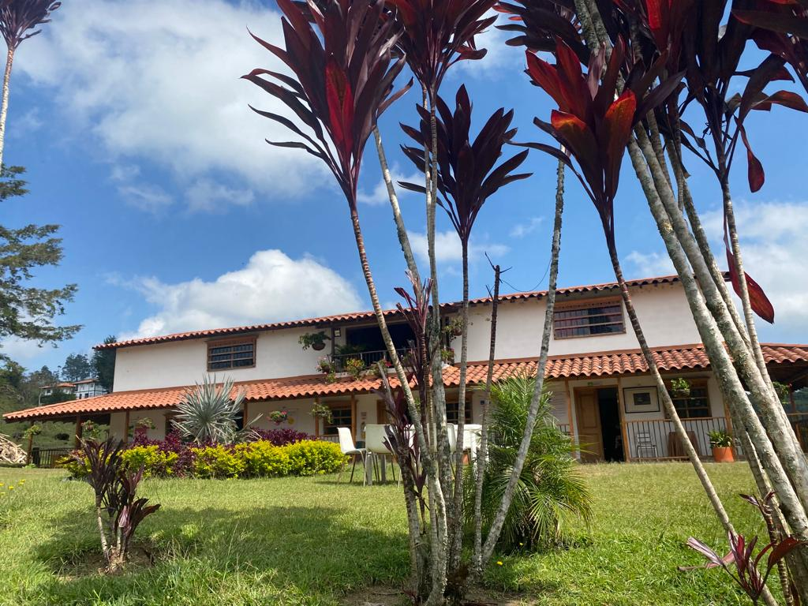
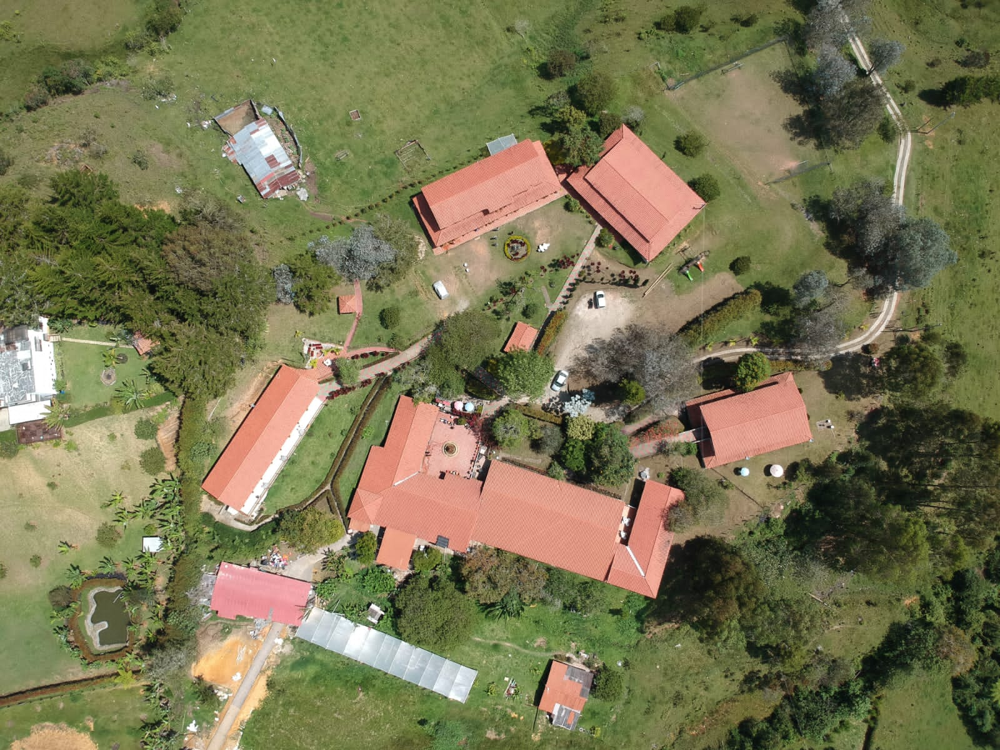
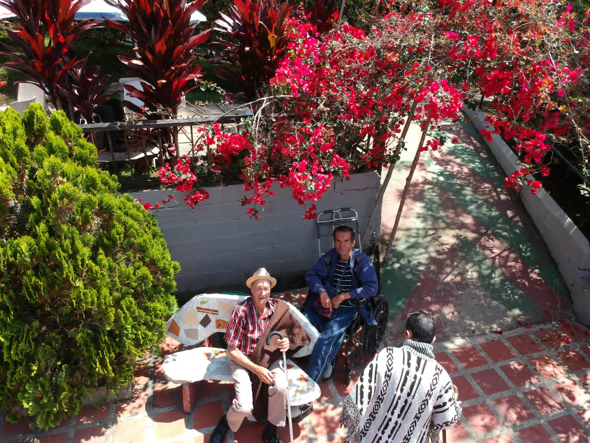
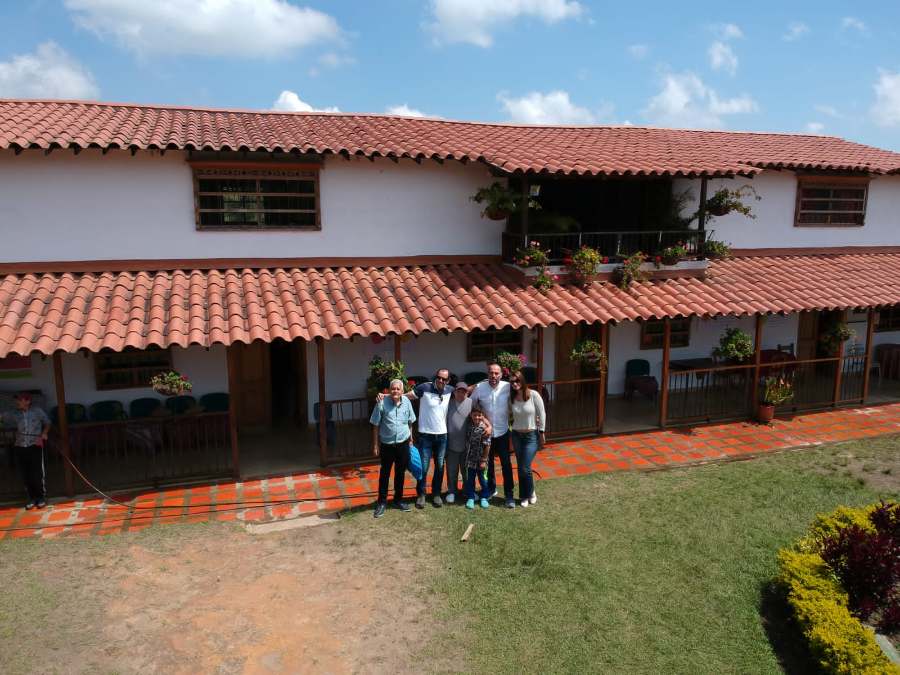
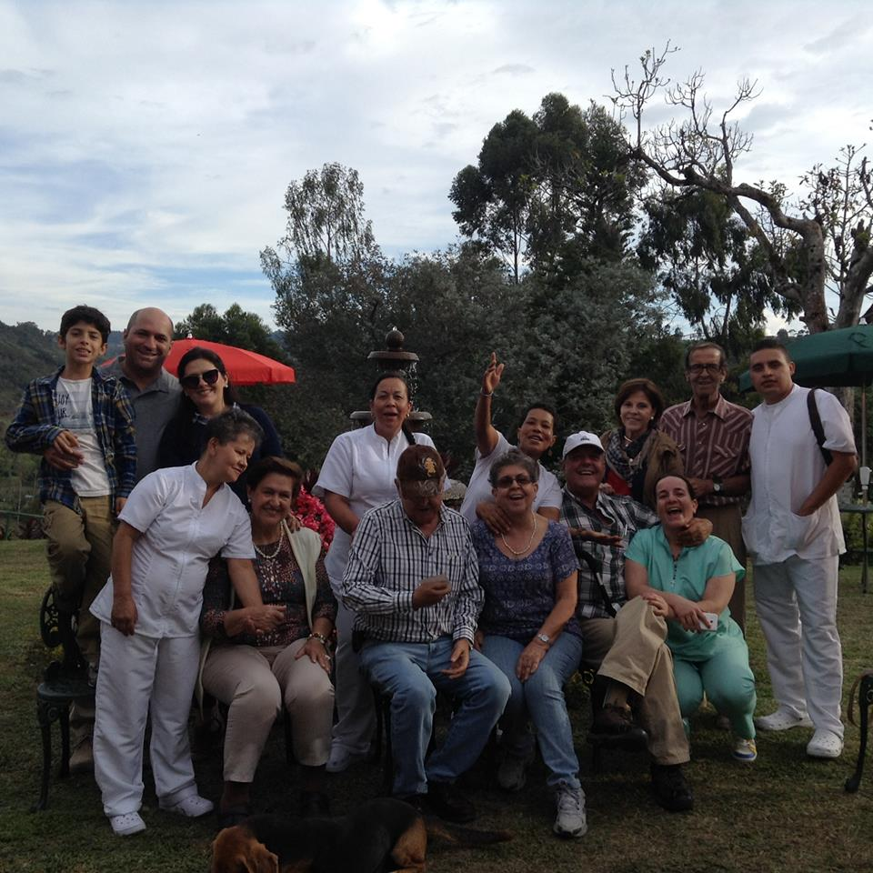
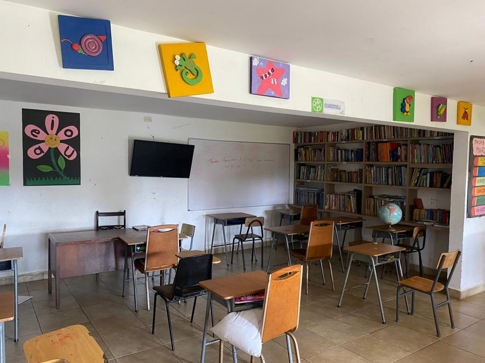

Bienvenido!
La Fundación El Remanso de Nuestros Viejos esta al servicio Social y humano, dedicada a prestar servicios Gerontológicos, a ancianos vulnerables y en soledad, garantizándoles sus derechos en un ambiente de calor humano dignidad y respeto a adultos mayores de 60 años de ambos sexos, que carecen de un entorno adecuado para vivir con calidad de vida.


Nuestra Ubicación
El Remanso funciona en el paraje alto bonito ALDEA DA VIDA, allí está un hogar campestre, Vereda La Milagrosa del Municipio de Marinilla a ¼ de hora de distancia de la cabecera Municipal. Kilómetro 10 de la carretera que de Marinilla conduce al Peñol. cuenta con amplios corredores patios y zonas verdes, con sus jardines, donde la naturaleza en su esplendor belleza y armonía paisajística, invita a sus moradores a convivir y revivir en la compañía y alegría de sus compañeros, saneándose desde lo anímico, físico y espiritual, recreando nuevas ilusiones para suplir lo que ayer fue y hoy ya no es, con el renacer de nuevas ilusiones que le acompañarán hasta el final de sus días terrenales.
Cómo llegarQuienes Somos
MISIÓN
Constituirse en una Alternativa contra la marginalidad y abandono de los adultos mayores, que requieren cuidado y protección en un verdadero hogar, donde nuevas formas de ocupación le proporcionen aliciente y solvencia moral suficiente para vivir con dignidad.

VISIÓN
Crecer en capacidad de albergue y servicio, siendo modelo de eficacia y productividad para los ancianos, logrando la participación y acercamiento intergeneracional donde los ancianos residentes serán los artesanos de las relaciones y ejemplo de valores entre los jóvenes, niños y adultos.

Fotos de Nuestra Sede
Historia
Monseñor Francisco Hernández Giraldo, líder carismático, con especial sensibilidad hacia los más pobres entre los pobres y en ellos los ancianos abandonados, funda el Remanso de Nuestros Viejos en 1.988.
La fundación inicia labores con cuatro ancianos, en una finca de su propiedad, que donó para los ancianos más necesitados.
Desde entonces ha venido creciendo y mejorando su infraestructura en el marco de las Leyes 1251 de 2008, 1276 de 2009, 1315 de 2009 y resolución 8333 de 2004 que regulan la prestación de servicios Gerontológicos en Colombia, actualmente se tiene una capacidad instalada para atender 50 adultos Mayores de ambos sexos, lo que se ha logrado con planes de mejoramiento que día a día se implementan contando con la solidaridad de empresas y personas de gran corazón.
Está liderada por un nutrido grupo de Gerontólog@s y otros profesionales, quienes prestan su servicio como Voluntarios, además cuenta con una planta de cargos según el requerimiento, vinculados mediante contrato laboral y por prestación de servicios.

Done Aquí
PLAN PADRINO
Programa de participación comunitaria y movilización social cuyo objetivo es apoyar a un anciano carente de recursos para que sea atendido en el Remanso de Nuestros Viejos en igualdad de condiciones, a quienes no pueden solventarse económicamente.
PROYECTOS DE INFRAESTRUCTURA Y DOTACIÓN
Son Proyectos de mantenimiento y mejoramiento locativo que contribuyen al bienestar de los ancianos.
PROYECTOS TERAPÉUTICOS EDUCATIVOS Y CULTURALES
Son Programas para el mejor-estar de la población de adultos en su diario vivir.
BENEFACTORES

- CARNES CASA BLANCA
- MKT MERCADEO SAS.
- CARNELY.
- KOBA REGIONAL ORIENTE
- SACIAR BANCO DE ALIMENTOS.
- CORPORACIÓN ACCIÓN SOCIAL CATÓLICA de Medellín
- CORPORACIÓN NUEVOS SENDEROS
- COLONIA DE CONCEPCIÓN
- COLONIA DE MARINILLA, FUNDASERNA.
- INVERSIONES TRT
Marco Legal
- Nombre y razón Social
- Fundación Remanso de Nuestros Viejos
- Organización Jurídica
- Entidad sin ánimo de lucro
- Categoría
- Persona Jurídica Principal
- NIT
- 800056695-1
- ADMINISTRACIÓN DIAN
- Medellín
- DOMICILIO
- Marinilla.
- INSCRIPCIÓN NO
- S0500473